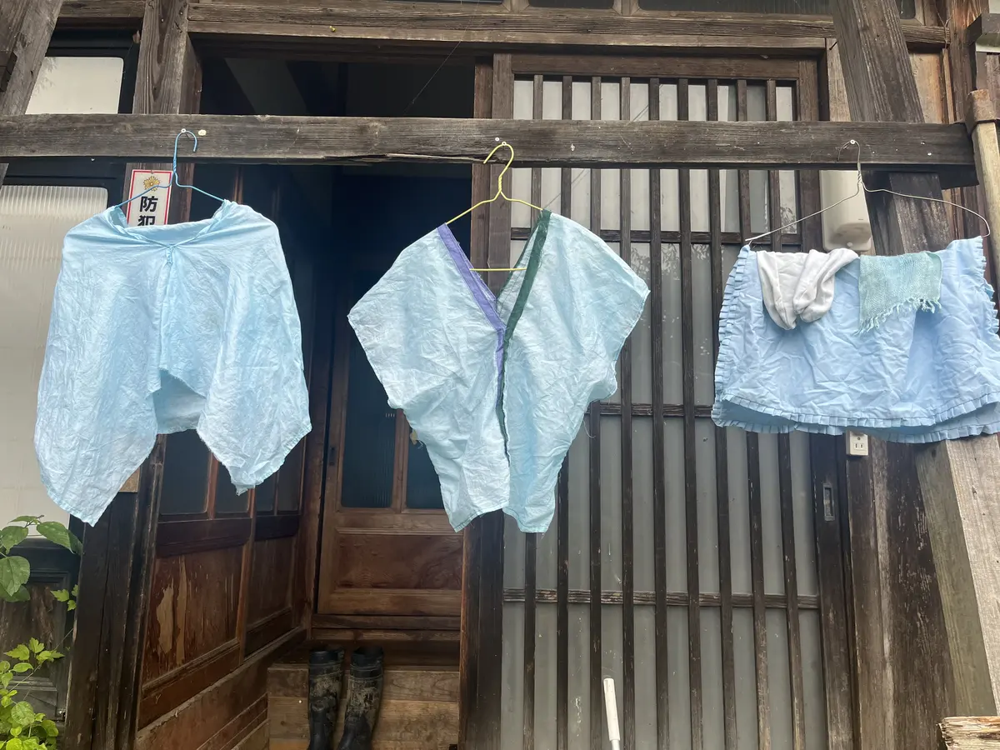
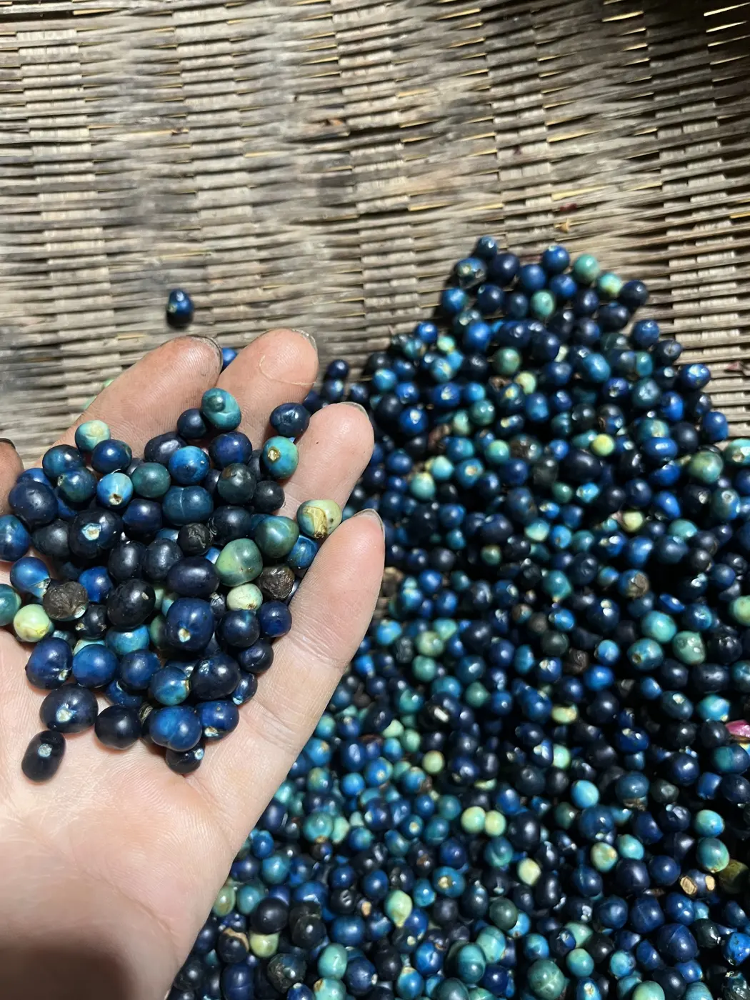
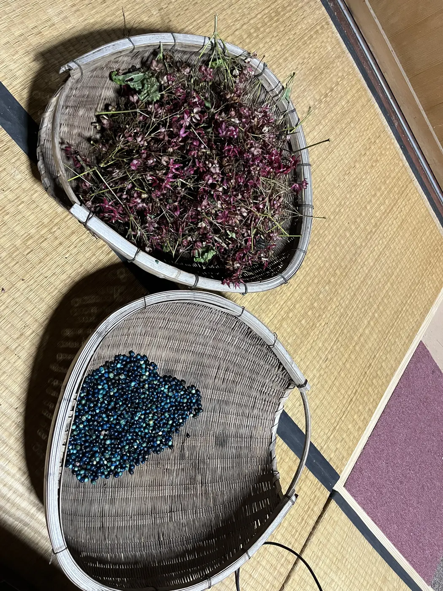
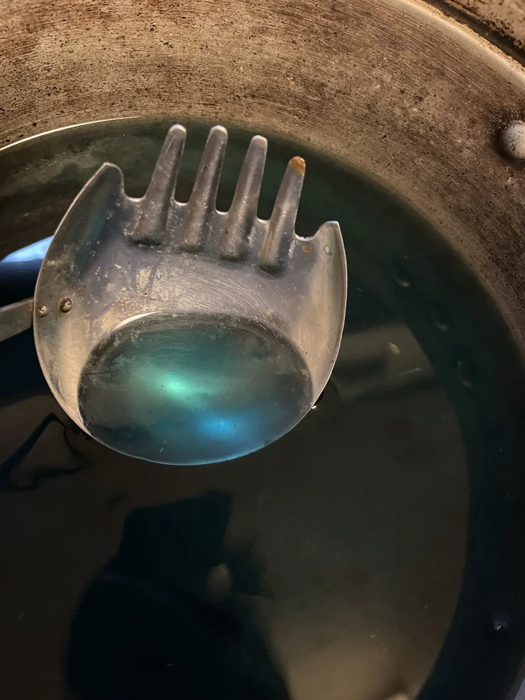
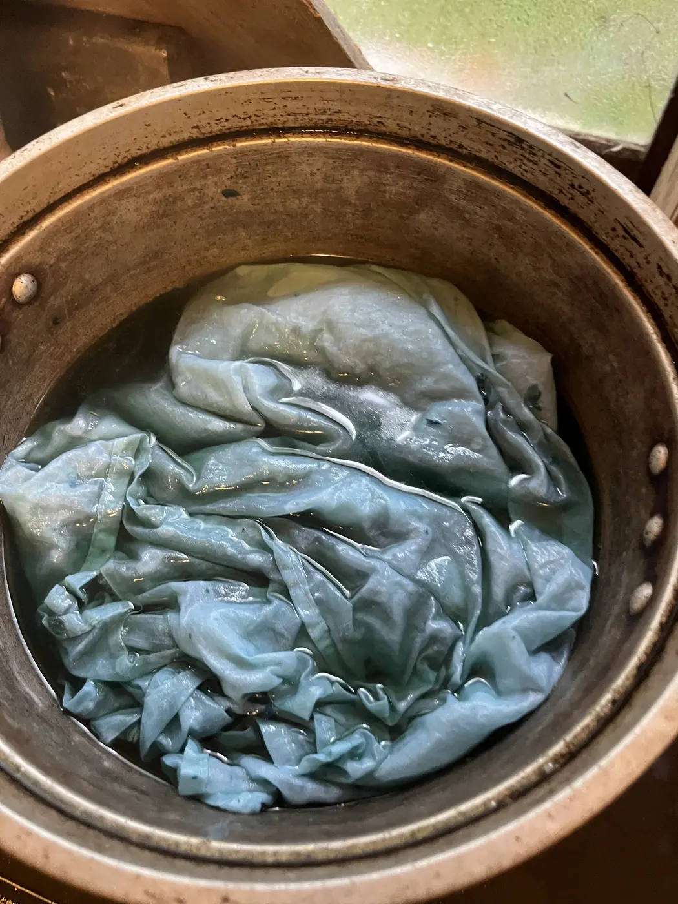

クサギ染
クサギの果実、萼、葉など部位ごとの発色を比較した植物染色の記録です。採取時期、抽出温度、媒染による色の違いを確かめました。

- Year
- 2025年
- Place
- 小院瀬見
- Materials / Method
- クサギ、布、媒染剤
What I tried
採取物を部位ごとに分け、果実と萼は潰してから沸騰させすぎない温度で抽出しました。浸染、酸化、水洗を繰り返し、条件ごとの色を比較しています。葉を直接擦る青摺みも試しましたが定着せず、失敗を含めて植物ごとの発色機構の違いを記録しました。



